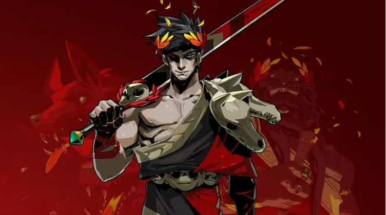

Zagreus (Darren Korb), the son and Firstborn of Hades (Logan Cunningham), seeks to escape his father's realm in the Underworld. He is aided in his quest by his adoptive mother Nyx (Jamie Landrum), the Gods of Olympus to whom he has reached out, and other inhabitants of the Underworld. Hades claims that escape is impossible and hinders Zagreus by unleashing the Underworld's monsters on him. When Zagreus is slain, he is revived at the House of Hades, a palace where he and other Chthonic gods reside, which he leaves to attempt another escape.
It is eventually revealed that Zagreus wishes to escape the Underworld to find Persephone (Laila Berzins), his biological mother, whom he never knew due to being told that he was the child of Nyx. Hades refuses to allow her name to be spoken in his House, and it is said that those who disobey this order will be punished. Nyx decides to help Zagreus find the truth about his birth mother by putting him in contact with his relatives on Olympus. After reaching the exit to the Underworld and defeating Hades, Zagreus finds Persephone at a cottage in Greece. After they reunite, Zagreus discovers that since he, like Hades, is bound to the Underworld, he will quickly die after reaching the surface. Despite this, he promises to keep escaping the Underworld to spend time with Persephone and learn the truth about her absence.
Over the course of these visits, it is revealed that Zeus (Peter Canavese) "gave" Persephone to Hades as a reward for ruling over the Underworld, with the other Olympians believing that she simply disappeared. The two had a loving marriage until Zagreus was stillborn due to the Fates having decreed that Hades would never have an heir. Persephone ran away in grief but refused to return to her birthplace on Olympus, which she disliked due to the Olympians' constant bickering. Nyx eventually resurrected Zagreus after making a deal with the Fates. Persephone refuses to return to the Underworld because she fears retribution towards Hades if the Olympians discover the truth about her disappearance. Zagreus eventually convinces her to return after reminding her of the bonds of family, and Charon (Logan Cunningham) ferries them to the House of Hades. Persephone resumes her duties as Queen of the Underworld and Hades, now with renewed respect for his son, requests that Zagreus continue his escape attempts to identify further security vulnerabilities in the Underworld.
In an epilogue, Persephone tells Zagreus of her idea of reconciling with the Olympians by inviting them to a feast in the House. At the feast, they claim that Hades and Persephone eloped and had Zagreus, while saying that due to her having eaten Underworld pomegranate seeds, she can only leave the Underworld a few months out of the year. The Olympians accept this explanation, though it is implied they know the truth and wish to move on. With everyone reconciled, Zagreus' duties to escape his home continue.
